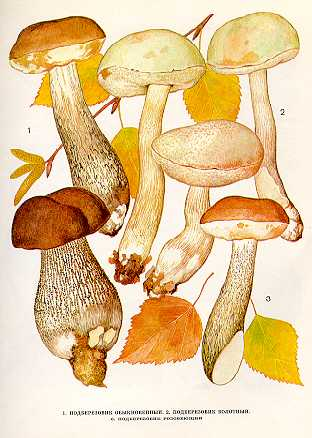

ПОДБЕРЕЗОВИК. БЕРЕЗОВИК. ОБАБОК.
Растет в лиственных и смешанных лесах под березами.
Встречается часто и обильно с конца мая до поздней осени.
Шляпка до
Трубчатый слой беловато-сероватый. Трубочки длинные.
Споровый порошок желто-бурый. Споры веретеновидные.
Ножка до
Все виды съедобны, второй категории. Употребляются свежими, пригодны для сушки. В наших лесах встречаются следующие
виды и формы съедобных подберезовиков.
Встречаются следующие виды подберезовиков:
1. ПОДБЕРЕЗОВИК
ОБЫКНОВЕННЫЙ.
Растет в лиственных и хвойных
лесах с примесью березы. Встречается очень часто и обильно с
мая по сентябрь.
Шляпка 3—15 см
в диаметре, полушаровидная,
затем подушковидная, окраска
от беловато-сероватой
до темно-серой. Мякоть беловатая, на разрезе окраски
не изменяет или слегка розовеет.
Ножка до
2. ПОДБЕРЕЗОВИК
БОЛОТНЫЙ.
Растет в сыроватых или заболоченных
лесах. Встречается часто и обильно в июле — сентябре.
Шляпка до
Гриб съедобен, третьей категории.
Употребляется свежим.
3. ПОДБЕРЕЗОВИК ОКИСЛЯЮШИЙСЯ. ПОДБЕРЕЗОВИК РОЗОВЕЮЩИЙ.
Растет в березовых, сосново-березовых
влажных лесах, по окраинам болот, на торфянистой почве. Встречается
редко в августе — сен-
тябре.
Шляпка небольшая, желто-бурая, светло-пятнистая. Мякоть
на изломе розовеет, потом темнеет.
Ножка короткая, белая, с
густыми черно-бурыми чешуйками.
4. ПОДБЕРЕЗОВИК ЧЕРНЫЙ. (ФОТО
НЕТ)
Растет в сырых сосново-бере-зовых
лесах. Встречается редко и необильно в июле — сентябре.
Шляпка до
Ножка с темно-бурыми чешуйками.
На подберезовик очень похож несъедобный жёлчный гриб, который отличается от него грязновато-розовым трубчатым слоем, сетчатым рисунком на ножке и горькой Мякотью